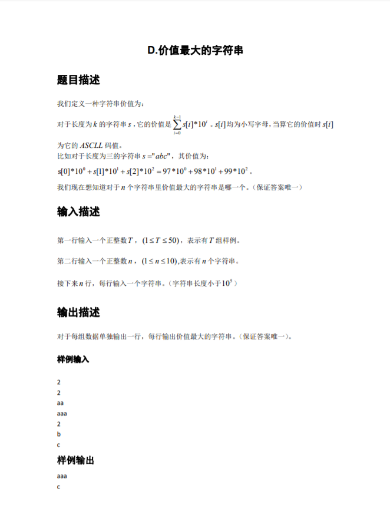

D题

1 #include<iostream>
2 #include<map>
3 #include<algorithm>
4 #define int long long
5 using namespace std;
6
7 /*解题思路：题中的乘以10的倍数，只是虚晃，可以不用在意，因为只要保证字符串的大小就行了，字符串大的乘以相同大小的数自然还是大的
8 如果在输入的字符串中只存在一个最大长度的字符串，比如输入3个字符串，分别是：abc acb acbb 自然是acbb这个字符串最大，找出来直接输出即可
9 如果在输入的字符串中存在多个相同长度的最大字符串，比如输入4个字符串，分别是ab abcd abdc accc 可以看出来，abcd这个字符串最大，因为字符串的比较大小直接可以用
10 比较操作符来进行比较，而我们要在后三个字符串中挑出最大的，如何实现呢？
11 将最大长度的字符串都反转以下，使用reverse反转函数，上述例子将变为：dcba cdba ccca 再从这里面找出最大的字符串即可，即为dcba 最后输出再次反转回来即可
12 */
13 signed main()
14 {
15 int t;
16 cin >> t;//输入样例个数
17 while(t--)
18 {
19 map<int,int> vis;//使用一个图，相当于一个vis[]数组，用于存储最长字符串有多少个
20 string str[100];//开一个字符串数组，用于存储输入的字符串，本题只要大于10即可
21 string ans;//如果存在唯一一个最大字符串长度的字符串，则用于保存它，用于输出
22 int n;
23 int maxn = 0;//找出最长字符串
24 cin >> n;//输入字符串个数
25 for(int i = 1;i <= n;i++)
26 {
27 string temp;
28 cin >> temp;//循环输入n个字符串
29 int len = temp.size();//得到这个字符串的长度，进行下面比较操作
30 if(maxn < len)
31 {
32 ans = temp;//如果有出现暂时是最长的字符串，先记录到ans中
33 maxn = max(maxn,len);//更新maxn的值，使其保持最大状态
34 }
35 vis[len]++;//将此时的字符串长度记录到vis数组中，出现几个记录几个
36 reverse(temp.begin(),temp.end());//将字符串反转；
37 str[i] = temp;//将反转后的结果记录到str字符数组当中
38 }
39 //判断最长的字符串是否是一个，是，则直接输出，否则肯定存在多个相同长度的最长字符串
40 if(vis[maxn] == 1)
41 {
42 cout << ans << endl;
43 continue;
44 }
45 string res;//res相当于临时变量，用于存储最后答案
46 //以下的for操作是在反转后的字符串中通过字符串比较操作符直接选出最大的字符串
47 for(int i = 1;i <= n;i++)
48 {
49 if(str[i].size() == maxn)//找出最长的字符串
50 {
51 if(str[i] > res)//通过字符串比较操作符进行比较，选出大的记录在res当中
52 {
53 res = str[i];
54 }
55 }
56 }
57 reverse(res.begin(),res.end());//由于得出的res是反转后的，必须再将其反转回来
58 cout << res << endl;
59 }
60 return 0;
61 }E题
1 #include<iostream>
2 #define int long long
3 #define mod 2019
4 using namespace std;
5 int arr[10000000];
6
7 signed main()
8 {
9 //在未开始输入的时候先对数据进行预处理，可大大降低时间复杂度
10 arr[0] = 3;
11 for(int i = 1;i <= 1000001;i++)
12 arr[i] = (arr[i - 1] * 2) % mod;
13
14 //等预处理完成后，再进行输入输出操作，就简便多了
15 int t;
16 cin >> t;
17 while(t--)
18 {
19 int n;
20 cin >> n;
21 cout << arr[n - 1] << endl;
22 }
23 return 0;
24 }